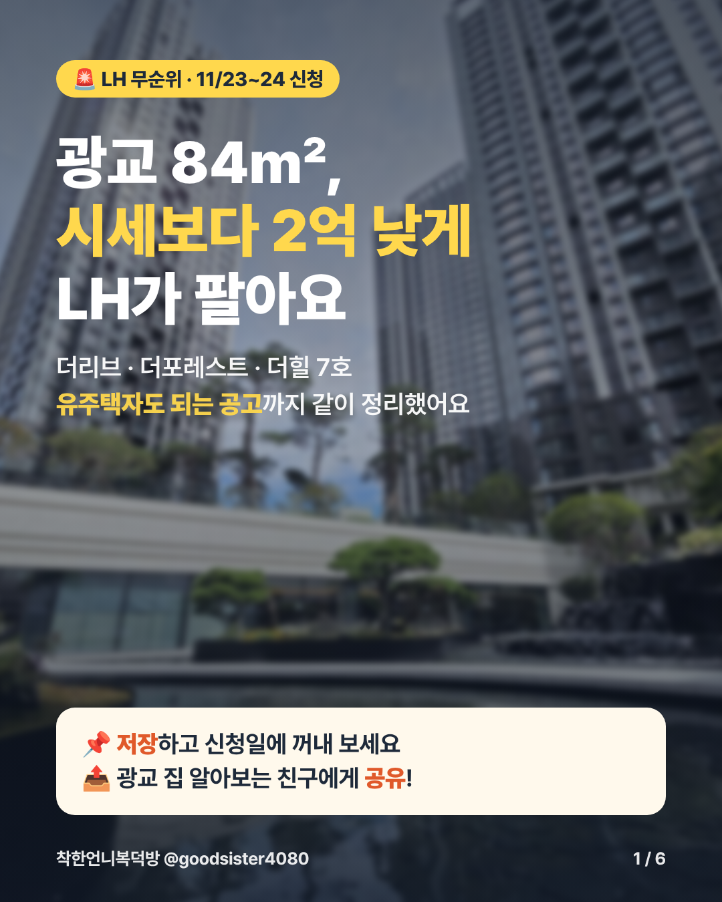

착한언니복덕방 콘텐츠 아카이브
@goodsister4080 · Instagram API 기준 2026.7.21 ~ 10.30 게시물 100개 (릴스 34 · 피드 66) · 2026.11.1 업데이트
📌 이번 주 할 일 (11/2 ~ 11/8)
🚨 LH 무순위 · 광교 더리브·더포레스트·더힐 · 저장·공유만 · 승인 대기
광교 84㎡ 시세보다 2억 낮게 · 신청 11/23~24 (6장)



🎭 고수 vs 하수 · 1인 2역 소재 5개
- 부린이 vs 고수 2편 · 계약서 쓰는 날
- 배액배상 1인 2역
- 잔금날 아침 하수 vs 고수
- 전세대출 3억→2억 1인 2역
- 집 파는 하수 vs 고수
🎬 이번 주 릴스 · "따라하면 큰일" 2편
- 11/12(목) 인터넷 집보기 꿀팁, 이대로 하면 큰일 ·
집보기 - 11/14(토) 카페 특약 꿀팁, 그대로 쓰면 큰일 ·
특약
11/11(수) 카드뉴스 · 갈아타기 · ✅ 게시 완료 (11/12 10:01) · 게시물
10억 집이 12억 될 때, 15억 집은 18억 (4장)
🚨 11/10(화) 전세사기 최소보장제 · 저장·공유형
보증금 1/3은 국가가 보장 — 오늘부터 신청 (5장)
📚 신림 재개발 카드뉴스 · 오를 곳 · #광고 도서협찬
신림 재개발, 구역마다 단계가 달라요 (6장 · 2장 = 구역 지도 · 릴스와 함께)


📊 11/1~11/8 결과 요약
- 🎬 자취방 릴스 도달 68,163 · 저장 1,366 · 공유 620 (이번 주 1위)
- 🃏 잔금 카드 댓글률 2.4% · 저장률 3.9% (보상형 목표 1% 달성)
- 청약 카드 댓글률 0.5%, 세종·과천 정보형은 저장률 0.1~0.2%
- 계정 28일 도달 342,890 (+24%) · 링크 클릭 94 (+29%) · 팔로워 23,291 (+165)


11/4(수) 카드뉴스 · 잔금 · ⏰ 밤 9시 예약
잔금 30일 전부터, 이 순서 틀리면 돈이 새요 (4장)


- 캡션·고정 댓글·노션 링크: 업로드 키트 (복사 버튼)
- 보상: 노션 「잔금 30일 캘린더 + 체크리스트 20」 → 웹에 게시
- 날짜 계산기: 잔금 캘린더 계산기
11/2(월) 카드뉴스 · 청약 · ✅ 게시 완료
11월 청약, 실수요자라면 이 3곳만 (5장)


- 인스타 게시물 보기 · 게시 후 캡션은 앱에서 수정
- 보상: 노션 「11월 수도권 청약 17곳 일정표 + 단지별 판단」 → 웹에 게시 후 DM 링크 연결
이번 주 릴스
- 11/2(월) 자취방 꿀팁 따라하면 큰일 ✅ 게시 (도달 1.1만+)
- 11/3(화) 10년 전 vs 지금 · "2016년 8억 5천, 지금 25억" ·
리스트 - 11/5(목) 사면 안 되는 아파트 TOP 5 ·
체크 - 11/7(토) 잔금날 이거 놓치면 수백만 원 ·
잔금
대본: 릴스 12편 대본
이번 주 카드뉴스
- 11/2(월) 청약 3곳 ✅ 게시 완료
- 11/4(수) 잔금 30일 캘린더 (4장) ✅ 준비 완료 ·
잔금 - 11/8(일) 전세대출 안 나오면 계약금? ·
전세대출✅ 게시 - 11/8(일) 내 현금으로 서울 어디까지? ·
첫집
11/9(월) 미리 준비 · 철도
위례선 트램, 12월 개통 또 연기 (5장 · 지도 배경)


- 캡션: 업로드 키트 (복사 버튼)
- 보상: 노션 「수도권 철도 개통 캘린더」 → 웹에 게시
11월 운영 계획 요약
📅 리듬
- 하루 1개, 주 7개: 릴스 화·목·토 / 카드뉴스 월·수·금·일
- 밤 9~11시 업로드 (오전 시간대 도달 최저)
- 하루 2개 이상 몰아 올리지 않기
🎬 릴스 대본 공식
- 0~3초: 숫자 + 충격 사실 (인사 금지)
- 15초: "자료 받는 법은 끝에서" 예고
- 40~50초: 주제 하나만, 마지막에 댓글 키워드
💬 카드뉴스 보상형 구조
- 4~6장으로 축소 (저장률 1·2위가 모두 4장, 8~10장은 0.71%)
- 본문은 무료로 완결 → 저장 유지
- 마지막 장: 보상 미리보기 + 댓글 '키워드' → DM 확장판
🎯 11월 목표
- 게시물당 도달 중앙값 5,131 → 10,000+
- 카드뉴스 저장률 3%+
- 카드뉴스 댓글률(댓글÷도달) 1%+
- 링크 클릭 73 → 300+
🎬 11월 릴스 12편
AI 활용 팁: Claude · ChatGPT · Gemini
Claude
- 인스타 API·노션 연결 → 주간 성과 갱신, 등급·메모
- C등급 중 '소재는 좋은데 구조 실패' 릴스 재대본
- 보상 자료 노션 페이지 제작, 말투 통일
ChatGPT
- S등급 공식 하나로 소재·훅 20개 대량 생성
- 카드 표지·썸네일·블러 미리보기 시안
Gemini
- 정책·청약 뉴스 1차 검색 (최종 확인은 원문)
- 경쟁 쇼츠 링크 → 첫 문장·CTA 위치·길이 해부
🖼️ 배경 이미지 · 지도
- OpenStreetMap 지도: 지금 자동 연결 (출처 표기 필수)
- Pexels · Pixabay · Unsplash: 무료 키만 받으면 자동 검색
- 한국 장면은 공공누리 1유형 · 현장 사진이 최고
- 소스 정리
⚠️ AI 금지 구역
- 실거래가·대출 한도·청약 일정·세법 숫자 → 원천 데이터로만
- 특약 문구는 직접 검수
- 토큰·개인정보는 다른 AI에 붙여넣지 않기
최근 28일 계정 성과
핵심 인사이트
✅ 성공 공식
- 가격 비교(그때 vs 지금) → 도달 최상위 (17만)
- ❌/⭕ 판정형 · 부린이 vs 고수 → 도달 + 저장 동시에
- 가격대별 리스트 + 댓글 자료 → 댓글 1천~6천
- '모르면 내 돈 놓친다' 손실 프레임 → 저장률 3%+
⚠️ 반복되는 실패 원인
- 인사·감사·'오래 기다리셨죠'로 시작 → 신규 유입 훅 없음
- 핵심 숫자·반전이 영상 끝에 있음
- 20대 자취·학부모·저가 빌라 → 핵심 팔로워(35~44세 매수자)와 불일치
- 도달이 터진 릴스(17만·9.6만)에 댓글 CTA가 없음 → 팔로우·상담 전환 손실
🔁 세입자 분쟁형의 함정
보일러·비데·수리비 릴스는 도달이 2만 안팎으로 괜찮지만 저장률이 0.1~0.5%로 가장 낮습니다. 도달은 나와도 팔로우나 상담으로 이어지지 않으니 월 1회 이하로 제한하는 게 좋아요.
✈️ 9월 휴식의 교훈
9월은 여행으로 9개만 올렸는데도 게시물당 도달 중앙값이 13,097로 4개월 중 가장 높았어요. 10월은 38개를 올렸지만 5,131이었어요. 쉬어서 손해 본 게 아니라, 많이 올릴수록 하나하나의 도달이 줄어든 것이에요. 11월을 '하루 1개'로 잡은 근거예요.
🔗 전환 병목
28일 동안 프로필 방문 4,564회 중 링크 클릭은 73회(1.6%)입니다. 링크트리 맨 위를 카톡 상담으로 바꾸고, 릴스 캡션 끝에 상담 안내를 고정하세요.
릴스 개별 분석 (34개)
캐러셀 · 피드 요약
💾 저장률 TOP (도달 2천+)
📣 도달 TOP
📉 10월 저장 하위
주간 시세·청약 일정·세종 이전 같은 뉴스 요약형은 어디서나 볼 수 있어 저장할 이유가 없습니다. 올린다면 '실수요자라면 이 3곳만'처럼 중개사 판단을 붙이세요.
📝 캐러셀 운영 메모
- 잘된 캐러셀은 모두 체크리스트 · 순서 · 타임라인형 (잔금일 20가지 저장률 7.0%)
- 청약 일정은 화제 단지일 때만 크게 확산 (신길센트럴시티 도달 15.9만 · 공유 2,212)
- 10월 하루 2~4개 몰아 올리기 → 게시물당 도달 중앙값 8월 12,547 → 10월 5,131
- 주 4회(월·수·금·일), 하루 1개를 넘기지 않기
- 댓글 보상형으로 전환: 댓글로 자료를 준 캐러셀은 7/26 '1억 8천' 하나뿐인데 댓글 248개 (나머지 대부분 0~12)
노션 릴스 소재 DB 진단
📌 이번 주 할 일
🔧 바로 고치기
- 핀란드타워 중복 글 중 조회 70인 쪽 비공개 (99+70로 쪼개짐)
- 하단 서명 → 내 템플릿 저장 · 위젯 · 소개글
일상/맛집·여행 글은 새로 쓰지 않기 (기존 글은 유지)- 태그 0개 글에 태그 5~10개
✍️ 이번 주 발행 (주 3편)
♻️ 기존 글 업데이트 (하루 1~2편)
- 2022·2025 건물 글: 2026 시세 한 단락 + 새 사진 + 제목 앞 2026
- 건물명 검색어는 제목에서 지우지 않기
- 2~3주 뒤 조회수 비교 → 효과 있으면 확대
📊 통계 진단
✅ 이 블로그를 키우는 건 '고유명사'
- 유입 검색어 TOP 16 전부 건물·단지·브랜드명
- 일반 정보 글(잔금·가계약금 등)은 TOP 20에 0편
- 건물 글은 2022·2025년 글도 아직 조회 → 오래 검색됨
🎯 바뀐 글 비중
| 비중 | 글 종류 |
|---|---|
| 50% | 건물·단지 글 (신촌·이대 오피스텔, 마포·서대문·동대문 아파트) |
| 30% | 이름 붙은 이슈 (청약 단지명, 재건축 단지, 제도+날짜) |
| 20% | 일반 정보 → 새 글보다 기존 글 업데이트 |
| 0% | 일상·여행 |
⚠️ 고칠 것
- 법정 표시: 등록번호 들어간 글 매물 글 2편뿐
- 최근 10편 중 7편 태그 0개
- 25편 중 5편 카톡 연결 없음
- 외부 링크 9~14개 몰린 글 → 공식 출처 1~2개 + 내부 링크로
- 하루 3~5편 몰아 발행 (7/28, 8/5) → 하루 1편 이하
🗺️ 우리 중개 범위 · 전문 지역
| 등급 | 지역 · 단지 | 우리 경험 | 글 형태 | 비중 |
|---|---|---|---|---|
| 주력 거래 | 더클래시 · 마포래미안푸르지오 · 마포프레스티지자이 · 마포그랑자이 · 신촌자이엘라 · 신촌푸르지오시티 + 부근 아파트·오피스텔 시세표 ↗ | 사무실 바로 앞, 실제 거래 최다 | 실거래·전세 정리, 평형 비교, 매물 글 | 50% |
| 생활권 | 신촌·이대 오피스텔, 북아현(힐스테이트신촌·신촌푸르지오·e편한세상신촌), 신촌럭키 | 사무소 생활권 | 건물·단지 글 | 20% |
| 거주 전문 | 이문 래미안라그란데(거주) · 이문아이파크자이(친척) · 장안동(본가) | 실제 거주 · 오래 산 동네 | "입주민 시선" 후기형 | 20% |
| 팀원 · 연고 | 자양동 · 일산 (동료 거주) · 인천 (유년기) | 동료 거주 · 연고 | 동료 인터뷰형, 인천→서울 갈아타기 | 10% |
🏠 래미안라그란데 · 이문아이파크자이
- 매매 기록 1~3건뿐, 전월세 233건 · 1,048건 → 지금 수요는 "입주 후 전세·월세"
- 전세 중위 두 단지 모두 59㎡ 6억 · 84㎡ 7억 5,000
- 글: 「래미안라그란데 실거주 후기」 「이문아이파크자이 vs 래미안라그란데 전세 비교」
🏘️ 장안동 84㎡ 12억대 4곳
- 장안현대홈타운 82건 · 11억 9,000
- 래미안장안2차 63건 · 12억 1,500
- 장안힐스테이트 42건 · 12억 3,500
- 래미안장안 28건 · 12억
- 글: 「장안동 토박이 중개사가 비교한 84㎡ 4곳」
🌉 자양동 · 일산 · 인천
- 자양동: 우성1 23건(59㎡ 14억 9,500), 자양우성7 18건(84㎡ 18억 5,000), 더샵스타시티 22건
- 일산·인천: 단지 지정해 주시면 조회
🏢 단지 글 소재 (마포·서대문 실거래)
| 순위 | 단지 | 제목 예시 | 왜 |
|---|---|---|---|
| 1 | 더클래시 | 마포 더클래시 실거래가 2026｜18평·59㎡·84㎡ 매매·전세 총정리 초안 ↗ | 주력 거래 · 「마포더클래시 18평」 유입 · 매매 38건 · 84㎡ 최고 25억 5,000 (26.08) |
| ★ | 북아현2구역 | 북아현2구역 이주 시작 11/9, 일정과 조합원 체크리스트 트래커 ↗ | 관리처분 후 이주 11/9~27.3/8 예정(보도) · 사무소 생활권 |
| 📚 | 신림 재개발 (도서 협찬) | 신림 재개발 전망 2026, 지금 사도 될까 📋 붙여넣기용 ↗ · 릴스·카드 ↗ | 1~10구역 단계표 · 3구역 실거래 · 여의도/강남 교통 · #광고 표기 |
| 2 | 신촌 현대벤처빌 | 2026 신촌 현대벤처빌 구조·매매·월세 시세 | 유입 검색어 0.55% · 매매 10건 |
| 3 | 신촌포스빌 | 2026 신촌포스빌 평면·실거래가·장단점 | 유입 검색어 0.44% · 매매 9건 |
| 4 | 마포래미안푸르지오 | 마래푸 1~4단지 실거래 비교 2026 📋 붙여넣기용 ↗ | 주력 거래 · 1~4단지 합산 84㎡ 중위 24억 8,000 (26건) |
| 5 | 마포프레스티지자이 | 마포프레스티지자이 59㎡·84㎡ 실거래가 2026 | 주력 거래 · 84㎡ 중위 28억 |
| 5-1 | 마포그랑자이 | 마포그랑자이 59㎡·84㎡ 실거래가·전세 2026 | 주력 거래 · 사무소 단지 · 59㎡ 중위 21억 8,500 (12건) |
| ★ | 신촌자이엘라 | 2026 신촌자이엘라 월세·매매 시세 📋 붙여넣기용 ↗ | 주력 오피스텔 · 월세 중위 월 115만 (보증금 2,000만 이하) · 오피스텔 177호 + 도시형 92세대 한 건물 (건축물대장) · KB시세 입력 중개사무소 |
| 5-3 | 신촌푸르지오시티 | 2026 신촌푸르지오시티 월세·매매 시세 | 주력 오피스텔 · 매매 22건 중위 2억 3,000 · 월세 중위 월 105만 |
| 6 | 신촌럭키 | 신촌럭키 84㎡ 14억대, 이대역 구축 장단점 | 사무소 동(대현동) · 매매 34건 |
| 7 | 북아현 신축 3총사 | 힐스테이트신촌 vs 신촌푸르지오 vs e편한세상신촌 | 84㎡ 19억 5,000~22억 비교 |
| 8 | 마포아이파크포레 | 마포아이파크포레 84㎡ 26억 8,000 신고가 | 26.09 최고가 |
🚨 하단 서명 (법정 표시)
A-1 · 신촌자이엘라점 (오피스텔·신촌·이대 글)
━━━━━━━━━━━━━━━━━━ 🏠 착한언니복덕방 | 신촌자이엘라 & 마포그랑자이 부동산 4인 전원 공인중개사 · 중개보조원 없음 · 마포·서대문 12년 📩 카카오톡 채널 상담: http://pf.kakao.com/_xcxoBxnX 📍 사무실 위치: (네이버 지도 삽입) 중개사무소: 신촌자이엘라부동산공인중개사사무소 대표 공인중개사: 신수경 · 등록번호 11410-2019-00062 소재지: 서울특별시 서대문구 대현동 104-36, B101호 연락처: 02-364-4080 ━━━━━━━━━━━━━━━━━━
A-2 · 마포그랑자이점 (아파트·마포 글)
━━━━━━━━━━━━━━━━━━ 🏠 착한언니복덕방 | 신촌자이엘라 & 마포그랑자이 부동산 4인 전원 공인중개사 · 중개보조원 없음 · 마포·서대문 12년 📩 카카오톡 채널 상담: http://pf.kakao.com/_xcxoBxnX 📍 사무실 위치: (네이버 지도 삽입) 중개사무소: 마포그랑자이(착한언니)부동산공인중개사사무소 대표 공인중개사: 신혜선 · 등록번호 11440-2022-00085 소재지: 서울특별시 마포구 대흥로 175, 상가4동 102호 일부 (대흥동) 연락처: 02-707-3434 🌐 서울시 지정 글로벌 부동산중개사무소 · English available ━━━━━━━━━━━━━━━━━━
어디서 넣나요? (PC)
- 내 템플릿 (핵심): 글쓰기 → A안 붙여넣기 → 오른쪽 위 [템플릿] → [내 템플릿] → [현재 글 저장] → 새 글마다 불러오기
- 사이드바 위젯: 관리 → 꾸미기 설정 → 레이아웃·위젯 설정 → [+위젯 직접등록] (PC에만 보임)
- 소개글: 관리 → 기본 설정 → 블로그 정보 → 소개글 마지막에 등록번호 줄 추가
- 기존 글: 매물·오피스텔 글 → 조회 TOP 20 순으로 하루 2~3편씩 하단만 추가
B안 · 매물 글 추가 항목
[매물 정보] 기준일: 2026. . 소재지: 면적: 전용 ㎡ (공급 ㎡) 가격: 매매 / 보증금·월세 거래 형태: 건축물 종류: 총 층수 / 해당 층: 사용승인일: 방향 (기준: 거실): 방 수 / 욕실 수: 입주 가능일: 주차 대수: 관리비:
✍️ 글 1편 공식
제목
- 검색어(단지명)를 맨 앞에, 25~35자
- 연도 넣기: 「2026 …」 「[2026년 11월 최신] …」
- 인스타 손실형 제목 X → 사람들이 실제로 치는 말
본문 순서
- ① 결론 3줄 요약 (AI 브리핑·구글 첫 문단)
- ② 대표 사진 → ③ 실거래 표 → ④ 해석
- ⑤ 착한언니 체크포인트 3개 → ⑥ FAQ 2~3
- ⑦ 내부 링크 2~3개 → ⑧ 하단 서명
할 것 / 하지 말 것
- ✅ 직접 찍은 사진 5~10장 · 태그 5~10개 · 공식 출처 1~2개
- ❌ 다른 글 복사 · 같은 키워드 10회+ · 외부 링크 남발
- ❌ 인스타 캡션 복붙 · 발행 직후 여러 번 수정
- ⚠️ 실거래·대출·세금 숫자는 원천 확인 후 기준일 표기
📅 11월 발행 계획
| 주 | 건물·단지 글 | 이슈 글 (인스타 연계) |
|---|---|---|
| 11/2~8 | 더클래시 실거래 · 현대벤처빌 | 11월 청약 단지별 1편 (고덕강일 패턴: 단지명+59㎡+분양가·견본주택) |
| 11/9~15 | 래미안라그란데 입주민 후기 · 신촌포스빌 | 위례선 트램 개통 연기 + 수도권 철도 일정 |
| 11/16~22 | 마래푸 1~4단지 비교 · 마포프레스티지자이 | 등기부등본 보는법 (기존 특약 글과 연결) |
| 11/23~29 | 장안동 84㎡ 4곳 · 북아현 신축 3총사 | 11월 서울 84㎡ 실거래 TOP · 연말정산 집 관련 공제 |
🎬 릴스 → 네이버 클립 · 유튜브 쇼츠
흐름
- 인스타 릴스 (화·목·토 밤)
- → 네이버 클립: 같은 날/다음 날 오전 · 설명란에 관련 블로그 글 링크
- → 유튜브 쇼츠: 다음 날 · 제목에 검색어 · 고정 댓글에 카톡 채널
주의
- 세 곳 모두 워터마크 없는 원본 (편집앱에서 내보내기)
- 끝 멘트: 인스타 "댓글 키워드 → DM" / 클립·쇼츠 "자료는 프로필 카톡 채널에서" 두 버전 저장
- 추가 촬영 0, 업로드 하루 5~10분
🔍 매주 금요일 10분 점검
| 체크 | 방법 | 기준 |
|---|---|---|
| 검색 누락 | 네이버에서 제목 전체 그대로 검색 | 1~2일 뒤에도 안 나오면 링크·복사 이미지·반복 키워드 점검 |
| 유입 검색어 | 통계 → 유입분석 → 검색 유입 | 새 건물·단지명이 보이면 그 이름으로 글 |
| 업데이트 효과 | 수정한 글 조회수 2~3주 비교 | 떨어지면 그 방식 중단 |
| 상담 전환 | 카톡 채널 유입 경로 · 톡톡 문의 | 주 10회+ |
🧭 한 줄 정의
"2014년 겨울부터 신촌 한 자리, 마포·서대문을 가장 깊게 아는 중개사"
정보는 AI가 누구에게나 줘요. 현장 · 거래 경험 · 지역 네트워크 · 계약 책임은 우리만 줄 수 있어요. 마케팅은 이 차이를 보여주는 데 쓰고, 나머지는 자동화합니다.
🤖 AI가 이미 주는 것 → 경쟁 X
- 실거래가 · 정책 요약
- 일반 계약 상식 · 체크리스트
🏠 우리만 주는 것 → 콘텐츠 재료
- 호실·층·향별 소음·채광·옵션, 실제 관리비
- 12년간 이 건물에서 본 계약·집주인 성향
- 나올 매물, 호가와 실제 거래가 차이
- 특약·보증보험·등기 리스크 책임
📌 규칙
- 모든 글에 「착한언니 현장 노트」 단락 필수
- 없으면 발행하지 않기
- 쌓이면 마포·서대문 건물·단지 백과 = 해자
🔎 모티브: 호두네부동산
| 호두네가 하는 것 | 우리 적용 |
|---|---|
【아파트정보】 20편 — 단지명 + 구·동 + 특징 + 단지정보와 시세확인, 구 단위로 훑기 | 유입 1위가 건물·단지명 → 【신촌·이대 오피스텔】【마포·서대문 아파트】 시리즈 |
| 정비구역정보 15편 — 세대수·분담금·사업성 | 마포·서대문 정비구역만 (북아현, 마포4구역 등) |
| 주간 가격 동향 매주 | API 자동 초안 (R-ONE 연결됨) |
| 위원회 결과 즉시 정리 | 마포·서대문 안건 나올 때만 |
| 유료 사랑방 회원 → 매물 리포트 → 매수 | 무료 카톡 채널 "마포·서대문 리포트" → 고객 명단 |
| 태그 10~20개, 단지명+재건축/시세/주차/학군 조합 | 태그 틀 만들어 복사 |
| 월 약 50편 | 따라 하지 않기 — 1인 운영, 주 3~4편 + 깊이 |
🏢 두 지점 = 두 개의 사업
자이엘라점 · 신촌·이대 오피스텔
- 고객: 대학생 + 지방 학부모, 사회초년생, 병원 직장인
- 매출 변수: 계절 (여름·겨울방학)
- 원칙: 시즌 6주 전 발행 · 네이버 블로그 + 플레이스 + 카톡
마포그랑자이점 · 아파트
- 고객: 실거주 매수, 갈아타기, 세입자
- 매출 변수: 정책 (대출·세금·토허제)
- 원칙: 정책 발표 48시간 안 "마포·서대문 단지 영향" 글
📅 자이엘라 시즌 달력
| 시기 | 발행 |
|---|---|
| 11월 (지금) | 학부모님편 2027 · 기숙사 탈락 후 방 구하기 · 건물 글 업데이트 |
| 12월 | 예산별 오피스텔 · 여성전용·보안 |
| 1~2월 | 최대 성수기 → 매물 글 + 카톡 공지 |
| 5~6월 | 여름방학 단기 · 건물 글 업데이트 |
| 비수기 | 아파트 쪽에 시간 몰기 |
📡 채널 역할 (1인 운영)
| 채널 | 역할 | 빈도 | 담당 |
|---|---|---|---|
| 네이버 블로그 | 원천 · 검색 · 전문성 증명 | 주 3편 | 초안 자동 + 현장 직접 |
| 카카오 채널 | 고객 명단 · 상담 · 재방문 (가장 중요한 자산) | 주 1회 | 자동 초안 → 확인 발송 |
| 인스타그램 | 도달 · 신뢰 (아파트) | 주 7 → 주 4~5 | 블로그 → 카드 자동 변환 |
| 쇼츠 · 클립 | 릴스 재활용 | 릴스와 동일 | 업로드만 |
| 네이버 플레이스 | 지역 검색 · 신뢰 | 글마다 | 소식 공유 1분 |
🤖 자동화
✅ 자동화하는 것 (주 11~14시간 절약)
- 단지·건물 카드 초안 — 국토부 실거래·건축물대장 API
- 주간 마포·서대문 시황 — R-ONE 주간 통계
- 월간 신고가·거래량 리포트
- 1 원천 → 5 채널 변환 — 카드 문구·캡션·릴스 대본·쇼츠 설명·카톡 메시지
- 예약 발행 — 블로그 예약 · Meta Business Suite · YouTube Studio · 카톡 예약
- 문의 1차 응대 — 카톡 자동응답 + 방 구하기 문의 양식 → 시트
- 주간 성과 리포트 → 이 아카이브 자동 업데이트
❌ 자동화 안 하는 것 = 전문성
- 현장 사진 · 현장 노트 · "이런 분께 맞아요"
- 실거래·대출·세금 숫자 최종 확인
- 매물 글 법정 표시 · 특약 문구
- 상담 · 협상 · 단골 관리
🗓️ 1인 운영 주간 리듬 (약 8~10시간)
| 요일 | 할 일 | 시간 |
|---|---|---|
| 월 | 자동 초안 3개 확인 → 이번 주 글 확정 | 1h |
| 화 | 현장 촬영 데이 — 건물·단지 2~3곳 (릴스 겸용) | 2~3h |
| 수 | 현장 노트 → 블로그 3편 예약 · 인스타·카톡 변환본 확인 후 예약 | 2h |
| 목 | 릴스 1편 편집 → 인스타·클립·쇼츠 동시 예약 | 1~2h |
| 금 | 주간 리포트 확인 · 카톡 주간 메시지 · 기존 글 1~2편 업데이트 | 1h |
➡️ 다음 단계
- 자동화 먼저: 단지·건물 카드 초안 자동 생성 + 1 원천 → 5 채널 변환 템플릿
- 카카오 채널 방 구하기 문의 양식 + 자동응답 (겨울방학 전, 11월 중)
- 자이엘라 시즌 글 2편: 「학부모님편 2027」 「기숙사 탈락 후 방 구하기」
- 주간 시황 자동 초안 정기 실행 (매주 목요일 부동산원 발표 후)
🧪 테스트 모드 · 대표님 확인용이에요. 홈페이지에는 연결하지 않았어요. 숫자는 참고용이고 구역 안 거래 여부·허가 대상은 원문으로 다시 확인해야 해요.
주소로 땅 정보 보기
한눈에
동별 빌라(연립·다세대) 거래
| 동 | 정비구역 · 현재 단계 | 거래 | 거래가 중간값 | 대지지분 평당 | 20년+ |
|---|
41개 정비구역 진행 단계
분양권·입주권 거래 단지
| 단지 | 거래 | 입주권 | 59㎡대 중간 | 84㎡대 중간 | 최근 거래 |
|---|